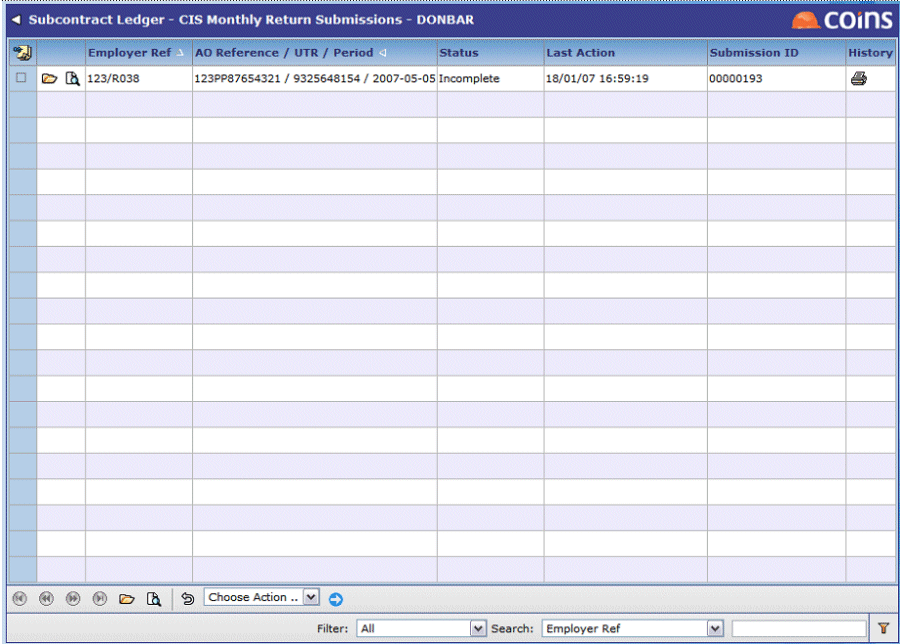
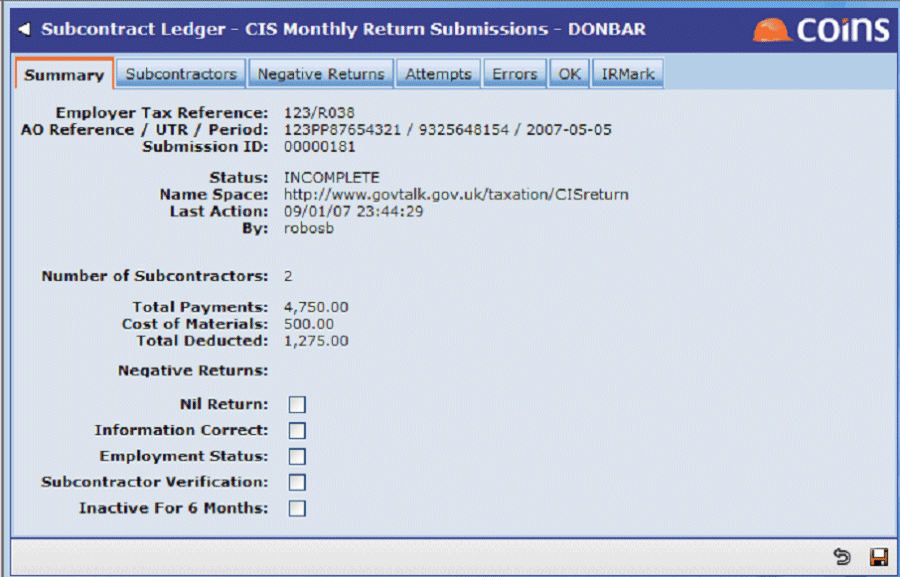

Electronic Submission
Under this method, you can print a draft monthly return for checking as with the manual submission method. You send the final monthly return electronically from to HMRC. also receives and records the acceptance or rejection of the return by HMRC. This method relies on successful electronic communication between your server and HMRC. In case of communication problems, you can use the manual submission method as a fallback.
To submit a month-end return:
- If you have more than one in a scheme, log in to the submission for that scheme.
- Go to Monthly Return Submissions.

The submission line has a status of "Incomplete".
- Click
 to open the submission record.
to open the submission record.

- Fill in the statutory declarations (see Statutory Declarations).
- If the password field is blank you need to enter your Government Gateway password for CIS submissions. fills in the password if it has been entered in the SCUK/PASSWORD parameter.
- Click
 .
.
The submission line now has a status of "Committed".
- Select the submission line.
- Use the Choose Action selector to select Submit, then click

submits the return to the Government Gateway. then continues to poll the Government Gateway until it receives a response.